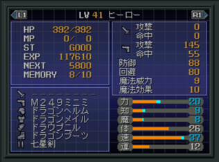
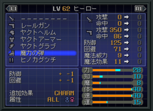
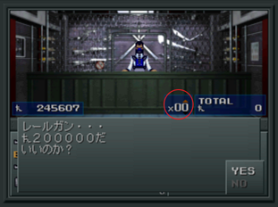

- 3시간만에 Lv99로 하는 방법
- 다른 루트에서도 세라프를 중마로 만들 수 있다!? (PS판)
- 무엇이든지 장비 가능! (PS판)
- 무적의 히어로 (PS판)
- 공짜로 장비품을 살수 있다. (PS판)
- 천마 야마와 몇 번이라도 싸우는 방법 (PS판)
- 마인 만나기~ 노가다 (PS판)
- 궁극의 병기ㆍ탄환
- CHARM 상태 처리법
- 중마의 상태 이상을 고친다.
- 「타루카쟈, 에스트마, 메디아라한」보유 악마에 대해...
- 타루카쟈
- 에스트마
- 메디아라한
3시간만에 Lv99로 하는 방법
- 우선 대홍수까지 스토리를 진행시켜 주인공과 히로인의 레벨을 적 악마의 에너지 드레인으로 레벨24 이하까지 내립니다. 카테드랄의 야마 서큐버스(54), 야마 인큐버스(49)가 에너지 드레인을 사용합니다.
- 레벨이 24이하가 되면 도청의 오른쪽으로 갑니다. 여기서 악령 레기온(44)과 전투를 합니다. 레기온을 '동료 부르기' 특기를 사용합니다.
- 파티가 전멸하지 않게 조심하면서, 반드시 1회의 전투로 142마리 이상 쓰러뜨립니다.
레벨24부터 레벨99가 될 때까지 필요한 경험치는 [1594000]으로 레벨 차이가 20이상 나는 레기온 1마리에서 경험치를 [11264] 받을 수 있습니다. 「11264×142=1599488」의 경험치를 획득하면 레벨이 99까지 오릅니다.
다른 루트에서도 세라프를 중마로 만들 수 있다!? (PS판)
일본웹에서 우연히 본 내용입니다.
링크 바로가기
뉴트럴이나 카오스에서 만들 수 없다고 알고 있던 세라프 우리엘, 라파엘, 가브리엘을 합체로 만들 수 있답니다.
카테드랄 B7F에서...
- LAW : 엔젤링 합성 후에 카오스 히어로와 리리스를 쓰러뜨리고, 아수라왕의 문을 열고 들어간다. (엔젤링의 힘을 해방)
- CHAOS : 카오스 히어로와 리리스를 만난다.
- NEUTRAL : 카오스 히어로와 리리스를 쓰러뜨린다.
무엇이든지 장비 가능! (PS판)

장비품을 장비할 때, 선택 버튼인 ○버튼과 십자키를 동시에 누르면 십자키 해당 방향의 장비품을 장비할 수 있습니다.(해당 장비칸을 비워둬야 됨)
- 장비할 수 있는 장비가 1개라도 소지하고 있어야 됩니다.
- 이 비법을 쓰기 전에 해당 장비 칸의 장비를 벗겨둬야 합니다.
- 검 장비칸에 총을 장비했을 경우, 검과 같이 적1체에 여러 차례 공격할 수 있습니다.
- 공격 횟수는 장비한 총의 공격횟수와 동일하며 공격 이펙트는 총입니다. 공격 횟수가 많은 총을 검으로 장비하면 매우 좋습니다.
- 탄 장비칸에 검을 장비하면 '총기의 공격력 + 검의 공격력'이 됩니다. 이렇게 하면 매우 강력하게 총을 사용할 수 있습니다.
- 이때 탄은 검이 되므로 무속성입니다. 보스전에서도 총이 잘 통하게 됩니다.
- 무기 장비칸에 방어구를 장비하면 게임이 멈춥니다.
무적의 히어로 (PS판)

상기 무엇이든 장비하는 비법을 사용합니다.
다리 장비칸에 마력의 탄(魔力の弾)을 장비하면 에너지 드레인과 반사 의외 모든 공격을 무효화합니다.
공짜로 장비품을 살수 있다. (PS판)

- 장비를 파는 가게에서 구입 화면으로 갑니다.
- 개수를 선택하는 화면에서 개수 01때, 결정 키 ○ + 아래키를 동시에 누르면 0개 상태에서 공짜로 구입할 수 있습니다.
- 곧바로 장비하겠냐는 질문에 YES를 눌러서 장비를 합니다.
- 캐릭터 장비 창에 해당 장비품이 장착된 것을 확인합니다. 이것을 되팔거나 그대로 사용하면 됩니다.
천마 야마와 몇 번이라도 싸우는 방법 (PS판)
천마 야마와 전투가 가능한 상황에서 사용 가능합니다.
EXIT로 나가기 전까지는 몇 번이라도 가능합니다.
- 투옥 후 밖으로 나가서 귀신 니오우를 쓰러뜨린다.
- 2F의 천마 야마를 쓰러뜨린다.
- 터미널에 가서 다른 장소에 전송 후, 토라에스트(トラエスト)를 사용한다.
- 천마 야마가 있는 장소로 가서 다시 야마와 전투를 할 수 있다.
마인 만나기~ 노가다 (PS판)
- 신쥬쿠(or 긴자)에서 세이브를 실시. '에스트마' 마법을 미리 써두면 좋다.
- 메모리 카드를 PS에서 뽑아둔다.
- 고정 악마 출현 포인트에 간다. 마인이 출현하면 OK
- 터미널로 돌아와서 「기록」을 선택하면 "메모리 카드가 삽입되고 있지 앟습니다."라는 메시지가 표시되지만 무시하고 취소 버튼을 연타해서 곧바로 나온다.
- 그 다음은 3번~4번을 무한 반복하면 된다.
궁극의 병기ㆍ탄환
신경탄(神経弾)ㆍ마력의 탄(魔力の弾)ㆍ마봉탄(魔封じの弾)ㆍ섬광탄(閃光弾)ㆍ해피 샷(ハッピーショット)
위 5개의 탄은 공격 상성이 만능(사실상 무시)입니다. 보스를 포함한 모든 악마에게 데미지ㆍ추가 효과가 있습니다.
다른 탄환은 공격 효율이 떨어지거나 상성에 영향을 받으므로 주의하세요.
CHARM 상태 처리법
아군이 매료 상태가 되었을 때, 행동 명령을 방어나 회복 마법을 사용하게 하면 평시와 같이 명령을 따릅니다.
중마는 COMP에 RETURN 시켜 다시 소환하면 상태가 회복됩니다.
중마의 상태 이상을 고친다.
「BINDㆍSLEEPㆍCLOSEㆍPOISON」등의 상태 이상은 COMP로 되돌려 놓으면 회복합니다.
「타루카쟈, 에스트마, 메디아라한」보유 악마에 대해...
이 3개의 마법은 게임 후반에 필수적이면서 히로인이 사용할 수 없기 때문에 중마에게 완전히 의지해야 합니다.
따라서 이 마법을 소지한 중마에 대해 알려드립니다.
타루카쟈
보스전에서 필수적인 마법. 소지 악마 대부분이 NEUTRAL계 입니다.
- LAW : 지령 노커(4), 천사 파워(40), 요마 온코트(43), 요마 하누만(63)
- NEUTRAL : 요정 고블린(6), 마수 산키(8), 정령 아시즈(8), 투귀 스파르토이(14), 수인 웨어캣(23), 요정 홉고블린(36), 요정 쿠ㆍ훌린(59)
- CHAOS : 요귀 모므노후(24), 타천사 오로바스(35), 요귀 슈텐도우지(49), 귀신 증장천(55), 귀신 지국천(59)
시나리오별 추천 악마
초반(치키죠우지) : 노커, 고블린, 아시즈
초반(코토우, 토르만) : 스파르토이
금상신계 : 웨어캣, 모므노후
대파괴 후 신쥬쿠~시부야 : 홉고블린, 오로바스
이후 T.D.L까지 : 파워, 슈텐도우지, 증장천
종반 : 하누만, 쿠ㆍ훌린, 지국천
에스트마
중반 이후 거리를 왔다 갔다 하는데 편리한 마법.
- LAW : 여신 쿠시나다히메(28), 성수 키린(38), 천사 소로네(61)
- NEUTRAL : 마수 올토로스(38), 정령 사라만다(40)
- CHAOS : 소지 악마가 없음
메디아라한
중반 이후 보스전에서 필수적인 전체 회복 마법. 소지 악마 대부분이 'LIGHT'계의 악마
- LAW : 천사 버처(46), 천사 소로네(61), 여신 락슈미(64), 세라프 가브리엘(96)
- NEUTRAL : 정령 운디네(30)
- CHAOS : 귀신 오오모노누시(38), 귀녀 고르곤(39), 용신 간가(49), 용신 마야(67)